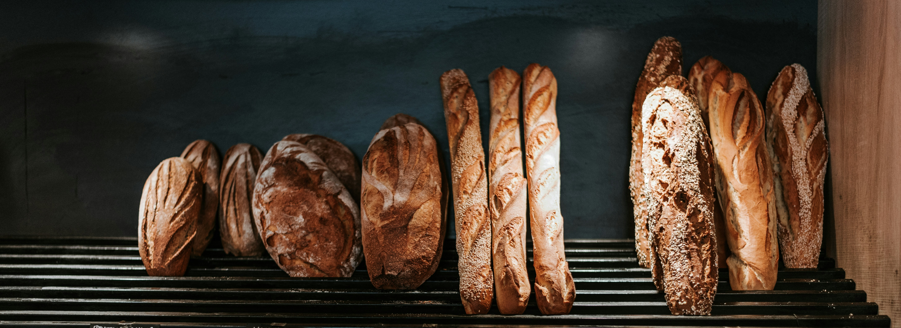
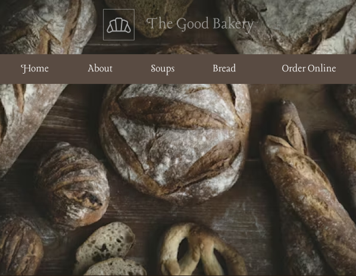

The Good Bakery
Mission
When I set out to design this app I wanted to create a fun and simple way for children to learn some facts about the planets. The goal was to have the app be interactive and easy to navigate, no matter the age of the user. I wanted to share my love of astronomy and create a learning tool to facilitate that.
Tools and Skills
Key Features
Bakery Branding
Explore our solar system by clicking through the Sun and planets.
Order Form
There is an interactive map integrated into the app that let's user see the current location of the ISS.
Product Display
The Sun and it's surrounding planets each have 4 facts listed on their respective pages.
Solution
The web app I created has a minimal design that is both appealing and allows the information to stand out. The design is responsive for all screen sizes, making it more accessible, and works well on tablets. This was intentional and aimed at being a tool for classrooms.

Process
Brainstorm the core concept and research existing astronomy tools to find gaps worth filling
Choose a final design and begin implementing
Choose a new framework (Ionic) to experiment with
Create several initial wireframes to get the layout and structure

Challenges
The biggest challenge was accurately converting spherical astronomical coordinates into Three.js world space. Small rounding errors caused visible misalignment at the edges of the sphere. Performance was another hurdle — rendering thousands of stars at once required instanced geometry and careful draw-call budgeting to keep frame rates smooth on lower-end hardware.
Learned Along the Way
This project deepened my understanding of 3D math, coordinate systems, and WebGL-based rendering through Three.js. I also learned how to work with public scientific APIs and parse large datasets efficiently in the browser. Beyond the technical side, designing for a dark, data-heavy interface pushed me to think more carefully about contrast, hierarchy, and how to guide a user's eye without cluttering the screen.